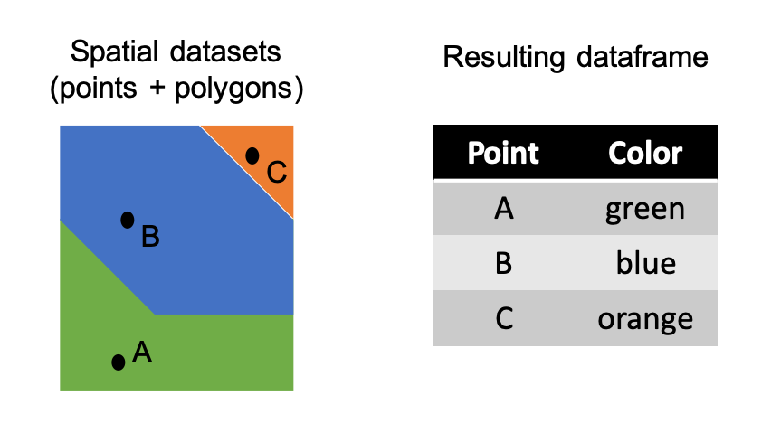

st_join(points, polygons, join = st_intersects)If you work with spatial data, you are probably familiar with the extract function from the raster package, which extracts values from a RasterLayer or RasterStack to polygons or points. This is the type of function you may use when you want to know the elevation at a latitude/longitude value or the mean temperature within a county polygon.
This function only works when you value you want to extract is in a raster. If you want to extract from a vector layer, you’ll need to use another operation or function. This technique is a type of vector overlay that is similar to an intersect operation.

I’ll go over the full workflow below, but the function is:
This is from the sf package, and you provide it with the point and polygon vector data, both as sf objects.
As an example, I’ll go through extracting state names to some random points.
The USAboundaries package has spatial data for the US. It can be installed from the ROpenSci repository.
# install.packages("USAboundariesData", repos = "http://packages.ropensci.org")
library(USAboundaries)
library(USAboundariesData)
library(sf)
library(ggplot2)
states <- us_states()
cities <- us_cities()
#due to an problem between differnt PROJ version, must manually set the CRS
st_crs(states) <- 4326
st_crs(cities) <- 4326We’ll just choose 100 cities at random and plot them over the states to get an idea of what this looks like. I’m going to zoom in on the East Coast just for visualization purposes.
sampled.cities <- cities[sample(1:nrow(cities), 100, replace = F),]
ggplot() +
geom_sf(data = states) +
geom_sf(data = sampled.cities) +
theme_void() +
coord_sf(xlim = c(-95,-60), ylim = c(25,50)) We’ll drop some columns so it is easier to see how the extracted values are added to the dataset.
sampled.cities <- dplyr::select(sampled.cities, city, state_name)
head(sampled.cities)Simple feature collection with 6 features and 2 fields
Geometry type: POINT
Dimension: XY
Bounding box: xmin: -123.3595 ymin: 34.20419 xmax: -79.2535 ymax: 44.54197
CRS: EPSG:4326
# A tibble: 6 × 3
city state_name geometry
<chr> <chr> <POINT [°]>
1 Wahoo Nebraska (-96.61662 41.21499)
2 Cincinnati Ohio (-84.50645 39.1399)
3 Mullins South Carolina (-79.2535 34.20419)
4 Downers Grove Illinois (-88.02123 41.79503)
5 Philomath Oregon (-123.3595 44.54197)
6 Edgerton Wisconsin (-89.07108 42.83823)We can then extract the values held in the polygons to the points.
point.extraction <- st_join(sampled.cities, states, join = st_intersects)
head(point.extraction)Simple feature collection with 6 features and 14 fields
Geometry type: POINT
Dimension: XY
Bounding box: xmin: -123.3595 ymin: 34.20419 xmax: -79.2535 ymax: 44.54197
CRS: EPSG:4326
# A tibble: 6 × 15
city state…¹ geometry statefp statens affgeoid geoid stusps
<chr> <chr> <POINT [°]> <chr> <chr> <chr> <chr> <chr>
1 Wahoo Nebras… (-96.61662 41.21499) 31 01779792 0400000US31 31 NE
2 Cincin… Ohio (-84.50645 39.1399) 39 01085497 0400000US39 39 OH
3 Mullins South … (-79.2535 34.20419) 45 01779799 0400000US45 45 SC
4 Downer… Illino… (-88.02123 41.79503) 17 01779784 0400000US17 17 IL
5 Philom… Oregon (-123.3595 44.54197) 41 01155107 0400000US41 41 OR
6 Edgert… Wiscon… (-89.07108 42.83823) 55 01779806 0400000US55 55 WI
# … with 7 more variables: name <chr>, lsad <chr>, aland <dbl>, awater <dbl>,
# state_name.y <chr>, state_abbr <chr>, jurisdiction_type <chr>, and
# abbreviated variable name ¹state_name.xThis extracts all of the columns from the states object to the city points, but you can also specify which columns you want by using select nested within the st_join function.
state.abbr.extraction <- st_join(sampled.cities, dplyr::select(states, state_abbr),
join = st_intersects)
head(state.abbr.extraction)Simple feature collection with 6 features and 3 fields
Geometry type: POINT
Dimension: XY
Bounding box: xmin: -123.3595 ymin: 34.20419 xmax: -79.2535 ymax: 44.54197
CRS: EPSG:4326
# A tibble: 6 × 4
city state_name geometry state_abbr
<chr> <chr> <POINT [°]> <chr>
1 Wahoo Nebraska (-96.61662 41.21499) NE
2 Cincinnati Ohio (-84.50645 39.1399) OH
3 Mullins South Carolina (-79.2535 34.20419) SC
4 Downers Grove Illinois (-88.02123 41.79503) IL
5 Philomath Oregon (-123.3595 44.54197) OR
6 Edgerton Wisconsin (-89.07108 42.83823) WI Just remember that when you want to “extract” polygons with sf what you are really doing is taking the results of a spatial join where the polygons intersect.